Texto extraído da edição fornecida, sem atualização normativa. Consulte a página original para conferir tabelas, formulários e instruções ilustradas. A numeração dos links corresponde à página do arquivo PDF.
Esta página contém conteúdo gráfico. Consulte a reprodução original abaixo.
Ver página original — tabelas, imagens e diagramas
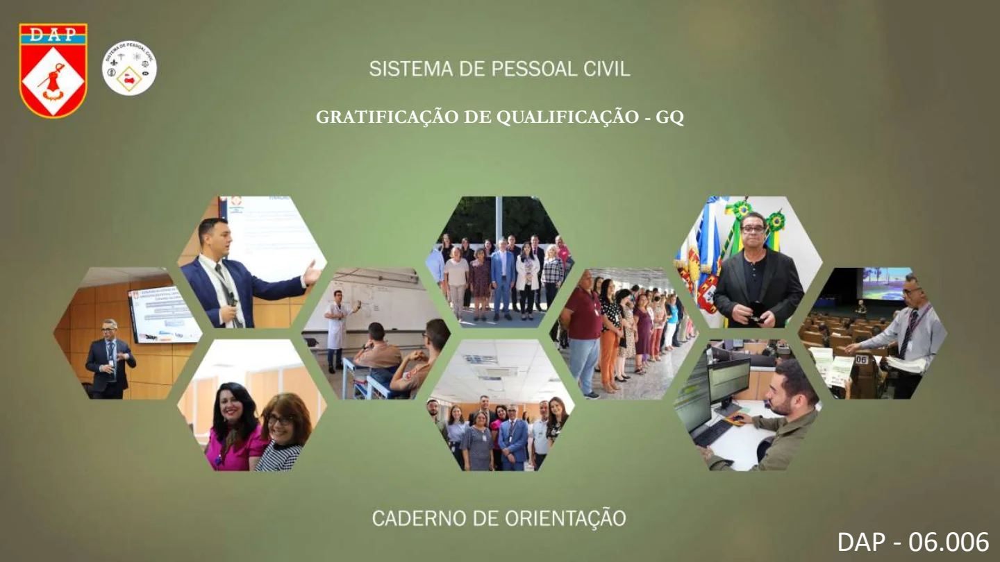
Legislação e conceito
PDF · p. 2Esta página contém conteúdo gráfico. Consulte a reprodução original abaixo.
Ver página original — tabelas, imagens e diagramas
Legislação e conceito
PDF · p. 3É dever do servidor/empregado público, da Organização Militar (OM) e da Região Militar (RM) ler e
acompanhar a atualização da legislação que se refere aos assuntos tratados neste Caderno de
Orientação.
Cabe ao gestor da unidade de gestão de pessoas, acompanhar as comunicações constantes do órgão
central do SIPEC (“COMUNICA”), no SIAPE.
Lei n° 9.657, de 3 de junho de
1998, alterada pelas Leis nº
11.907, de 2009, nº 12.277,de
2010, e 12.702, de 2012.
Decreto n° 7.922, de 18 de
fevereiro de 2013.
Portaria DGP n° 132, de 14 de
junho de 2013
Ver página original — tabelas, imagens e diagramas
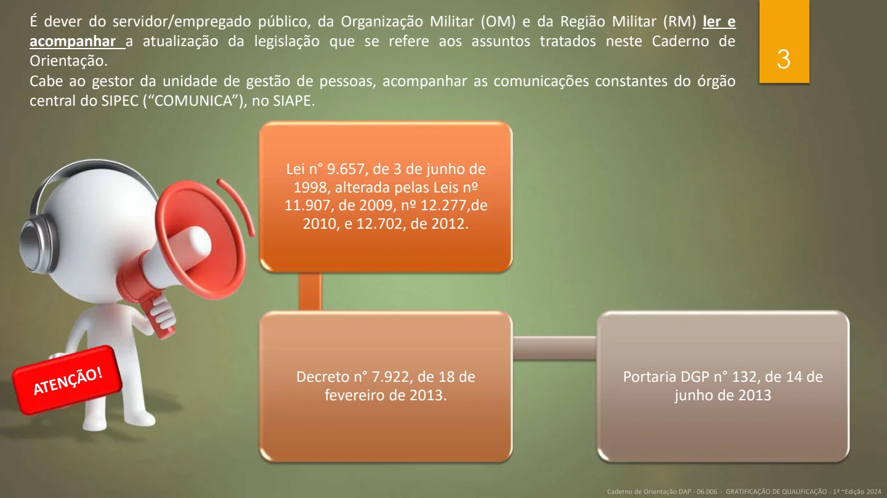
Legislação e conceito
PDF · p. 4A Gratificação de Qualificação – GQ é uma vantagem concedida
aos titulares de cargos de provimento efetivo de nível
intermediário integrantes do Plano de Carreira dos Cargos de
Tecnologia Militar (PCCTM), em retribuição ao cumprimento
de requisitos técnico - funcionais, acadêmicos e organizacionais
necessários ao desempenho das atividades de nível
intermediário de desenvolvimento de tecnologia militar.
Ver página original — tabelas, imagens e diagramas
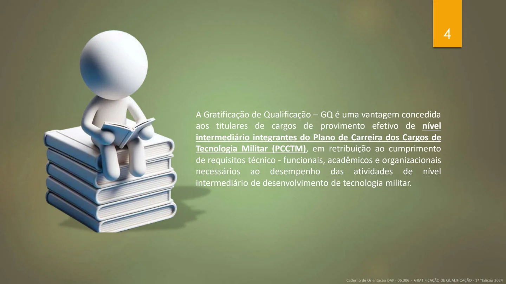
Requisitos básicos
PDF · p. 5Esta página contém conteúdo gráfico. Consulte a reprodução original abaixo.
Ver página original — tabelas, imagens e diagramas
Requisitos básicos
PDF · p. 61. São requisitos para a concessão da GQ:
Ser servidor civil
ocupante de cargo de
provimento efetivo de
nível intermediário
integrante do PCCTM
Requerimento do servidor
ativo, dirigido ao Cmt/Ch/Dir
da OM de sua lotação
O requerimento do
aposentado/pensionista será
endereçado ao Diretor de
Assistência ao Pessoal – DAP
O requerimento do servidor
cedido será endereçado ao
Comandante da Região
Militar em que estiver lotado
para fins administrativos.
Conhecimento dos serviços
que lhe são afetos na sua
operacionalização e na sua
gestão
Formação acadêmica e
profissional obtida mediante
participação, com
aproveitamento, em cursos
regularmente instituídos,
conforme listados na Tabela 1
- CAPACITAÇÕES NECESSÁRIAS
A CADA NÍVEL DA GQ
Análise dos critérios e
requisitos para
concessão da GQ,
conforme Tabela 1,
pelo Comitê Especial
(CE)
Ver página original — tabelas, imagens e diagramas
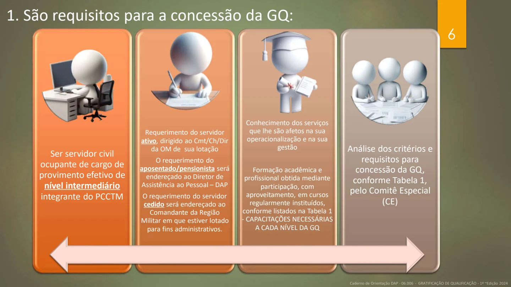
Capacitações e níveis da GQ
PDF · p. 7Tabela 1 - CAPACITAÇÕES NECESSÁRIAS A CADA NÍVEL DA
GQ:
GQ I GQ II GQ III
Participação em cursos de
capacitação ou qualificação
Profissional com carga horária
mínima de 180h Comprovar
conclusão de curso
de capacitação ou
qualificação
profissional com
carga horária
mínima de 250h
Comprovar participação, com
aproveitamento, nos seguintes cursos:
a) capacitação ou qualificação
profissional com carga horária mínima
de 360 (trezentas e sessenta) horas;
b) graduação;
c) pós-graduação lato sensu, com carga
horária mínima de 360 (trezentas e
sessenta) horas-aula;
d) mestrado; ou
e) doutorado.
OU
Reconhecimento da
qualificação profissional
adquirida em, no mínimo, 10
anos de efetivo exercício no
cargo, mediante aplicação de
prova prática e/ou escrita
Ver página original — tabelas, imagens e diagramas
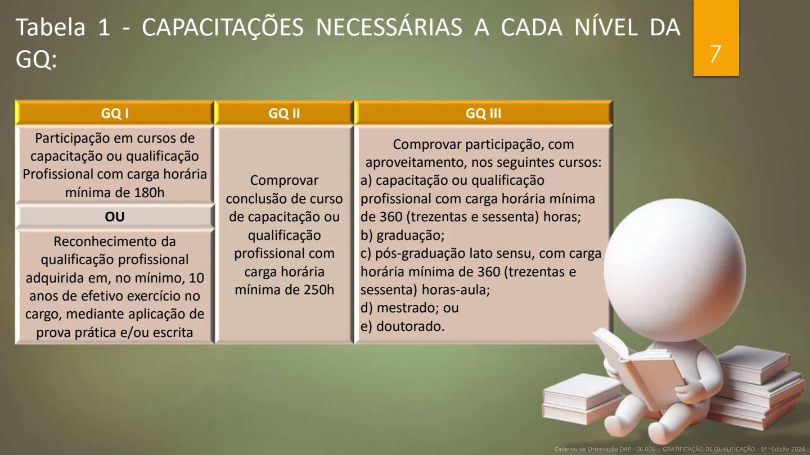
Capacitações e níveis da GQ
PDF · p. 8A prova prática e/ou escrita, para fins de concessão da GQ, Nível I, descrita na Tabela 1, tem o
objetivo de aferir qualificação profissional do servidor que contar com, no mínimo, 10 (dez) anos de
efetivo exercício no cargo E não possuir comprovação da carga horária necessária (Tabela 1).
NÃO cabe ao aposentado a aplicação de prova prática.
Nestes casos, a prova prática e/ou escrita será aplicada por Banca Examinadora,
constituída por ato do Comandante, Chefe ou Diretor da OM de lotação do servidor.
As Organizações Militares poderão solicitar à Região Militar de vinculação, apoio das
instituições de ensino vinculadas ao Exército para a aplicação da prova prática e/ou
escrita.
2. DO RECONHECIMENTO DA QUALIFICAÇÃO PROFISSIONAL POR
PROVA PRÁTICA E/OU ESCRITA:
Ver página original — tabelas, imagens e diagramas
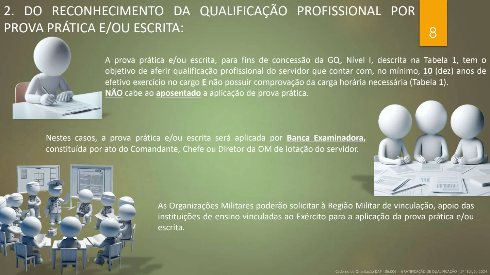
Capacitações e níveis da GQ
PDF · p. 9Após a aplicação da prova, a Banca Examinadora restituirá, em até cinco dias úteis, o
processo do servidor ao Comitê Especial, anexando a Ficha de Avaliação de Desempenho
Profissional (ANEXO B), para arquivamento e registro nos seus assentamentos
funcionais.
Depois de recebida a Ficha de Avaliação de Desempenho Profissional, o CE emitirá parecer,
recomendando ou não a concessão da GQ (ANEXO C)
Ver página original — tabelas, imagens e diagramas
Aceitação dos cursos
PDF · p. 103. CONDIÇÕES PARA ACEITAÇÃO DOS CURSOS:
As capacitações
mencionadas na Tabela
1 SOMENTE serão
consideradas na análise
do Comitê Especial,
para fins de concessão
da GQ, se pertinentes
às atividades
desempenhadas pelo
servidor na respectiva
OM de lotação.
Para fins de
comprovação da carga
horária mínima de cursos
de capacitação ou
qualificação profissional
estabelecida na Tabela 1,
poderá ser aceita a
acumulação de cursos,
desde que tenham
duração mínima de 40
(quarenta) horas-aula.
Os certificados de cursos técnicos PODERÃO ser
considerados para efeito de concessão da GQ.
A percepção da GQ em determinado nível NÃO é
condicionante para a percepção das demais GQ em níveis
subsequentes.
Ver página original — tabelas, imagens e diagramas
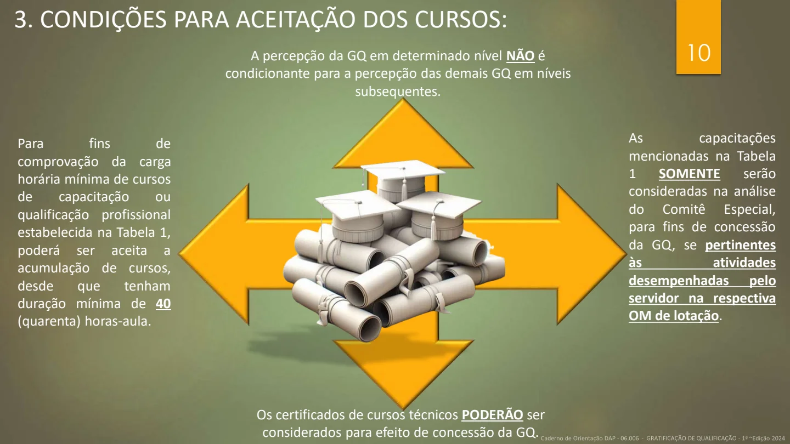
Informações gerais
PDF · p. 11Esta página contém conteúdo gráfico. Consulte a reprodução original abaixo.
Ver página original — tabelas, imagens e diagramas
Comitê Especial
PDF · p. 121. DO COMITÊ ESPECIAL
ABRANGÊNCIA Nº DE
MEMBROS
Nº DE
SUPLENTES
ATO DE
DESIGNAÇÃO
DOS MEMBROS E
SUPLENTES
DURAÇÃO OBJETIVO
No âmbito de
cada OM que
tenha lotação
de cargo do
PCCTM
3 ( sendo 1
presidente)
1 para
cada
membro
Emitido pelo
Comandante,
Chefe ou Diretor
da OM de lotação
do servidor
requerente.
Publicado no
Boletim Interno
da OM
1 (um)
ano
Análise das propostas de
concessão da GQ, no
prazo de até 15 (quinze)
dias após o recebimento
do requerimento,
devendo, após analisar a
documentação, emitir
parecer conforme
modelo constante no
ANEXO C
Tabela 2 - Das características do Comitê Especial
Ver página original — tabelas, imagens e diagramas
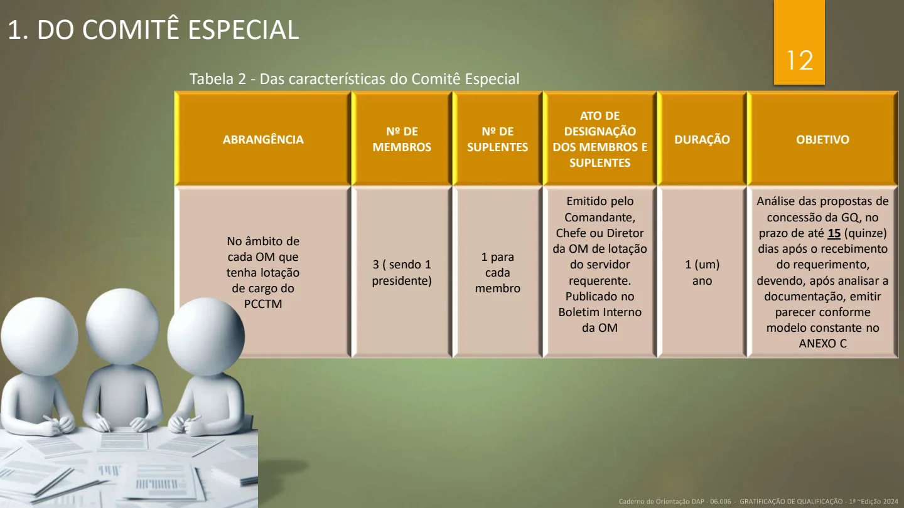
Comitê Especial
PDF · p. 131. DO COMITÊ ESPECIAL (cont.):
O Comitê Especial (CE) exercerá suas atividades com IMPARCIALIDADE, assegurando o
SIGILO necessário das informações e registrará as suas decisões e deliberações em ata.
O prazo para conclusão do parecer do CE é de ATÉ 30 (trinta) dias, contados da data de
convocação, admitida a sua prorrogação por igual período, quando as circunstâncias exigirem.
Em caso de dúvida sobre a legitimidade da documentação, poderão ser realizadas diligências com
vistas a verificar a idoneidade dos documentos apresentados. Nos casos em que recaia dúvida
sobre diploma/certificado, poderá ser consultada a instituição de ensino certificadora.
Ver página original — tabelas, imagens e diagramas
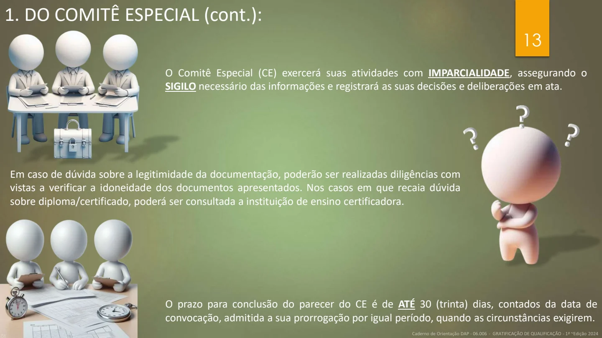
Comitê Especial
PDF · p. 142. DA ATUAÇÃO DO COMITÊ ESPECIAL:
O CE exercerá suas atividades com imparcialidade, assegurando o sigilo
necessário das informações e registrará as suas decisões e deliberações em ata.
Recebido o processo na OM, o mesmo será encaminhado para o Comitê Especial (CE),
que deverá realizar a análise dos critérios e requisitos para concessão da GQ,
conforme tabela 1.
Ao final da análise do pedido, o CE emitirá um parecer conclusivo.
Ver página original — tabelas, imagens e diagramas
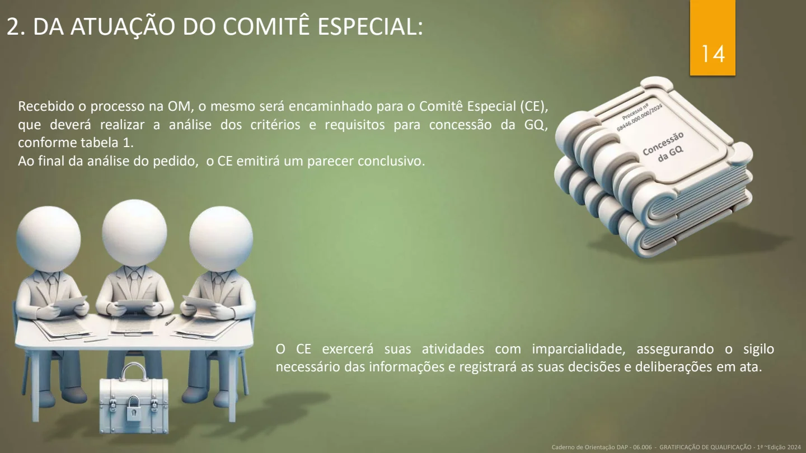
Comitê Especial
PDF · p. 153. DO PARECER DO COMITÊ ESPECIAL:
O parecer final, emitido pelo CE deverá conter conclusões sobre:
a carga horária mínima exigida
a legitimidade da
documentação
a compatibilidade do curso com as
atividades da OM
E
com o cargo ou as atividades
desempenhadas pelo servidor
o respectivo enquadramento da GQ, em caso de
parecer favorável.
Ver página original — tabelas, imagens e diagramas
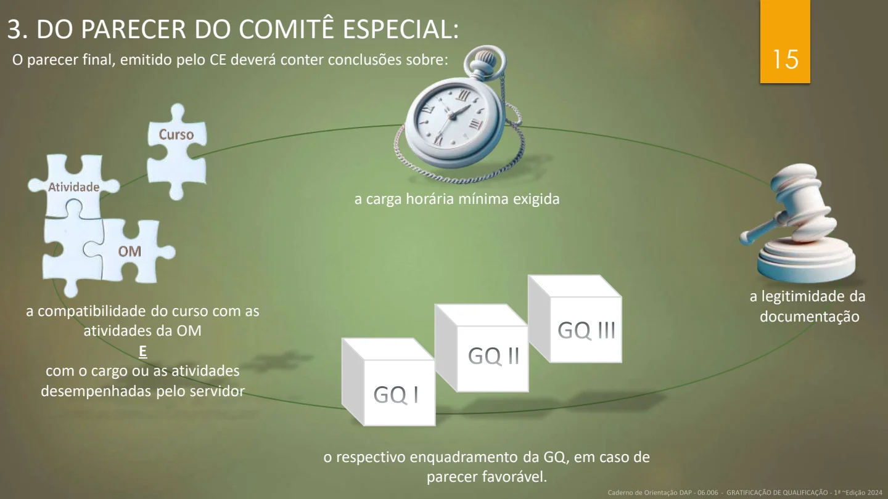
4. DOS PRAZOS:
PRAZOS:
O prazo para conclusão do parecer do CE
é de ATÉ 30 (trinta) dias, contados da
data de convocação, admitida a sua
prorrogação por igual período, quando as
circunstâncias exigirem.
Após recebimento do Parecer do CE, o
Comandante, Chefe ou Diretor da OM
proferirá sua decisão no prazo de dez dias
e procederá à publicação no Boletim
Interno.
Ver página original — tabelas, imagens e diagramas
Acumulação e aposentadoria
PDF · p. 1717É vedada a acumulação de diferentes níveis de GQ, bem como a acumulação
da GQ com qualquer adicional ou gratificação que tenha como fundamento
a qualificação profissional ou a titulação.
A percepção da GQ nos proventos de aposentadoria e
pensões observará o disposto na legislação vigente e nos
regramentos previdenciários aplicáveis a cada servidor.
A GQ será considerada no cálculo dos proventos e das
pensões somente se o título, grau ou certificado tiver sido
obtido anteriormente à data da inativação.
5. DAS OBSERVAÇÕES GERAIS:
Não cabe ao aposentado a aplicação de prova prática.
Ver página original — tabelas, imagens e diagramas
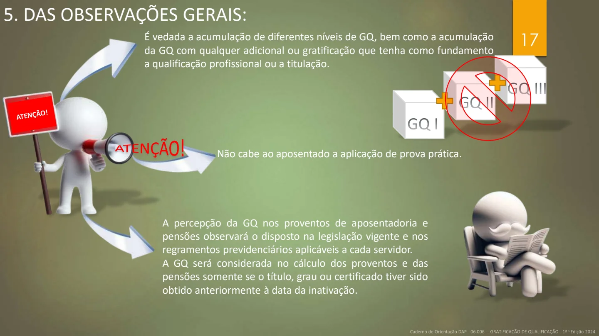
Reconsideração e recursos
PDF · p. 186. DA RECONSIDERAÇÃO E DOS RECURSOS¹:
RECONSIDERAÇÃO - PRIMEIRA INSTÂNCIA (contra o parecer)
COMPETÊNCIA PARA
INTERPOR A
RECONSIDERAÇÃO
PRAZO DE ENTRADA COMPETÊNCIA PARA
APRECIAÇÃO
PRAZO DE
APRECIAÇÃO
COMUNICADO DO
RESULTADO
O servidor
interessado
ATÉ 3 dias úteis
contados da ciência Comitê Especial 10 dias
ATÉ 3 dias após a
análise da
reconsideração
RECURSO - ÚLTIMA INSTÂNCIA (contra o parecer desfavorável do pedido de reconsideração)
COMPETÊNCIA PARA
INTERPOR A
RECONSIDERAÇÃO
PRAZO DE ENTRADA COMPETÊNCIA PARA
APRECIAÇÃO
PRAZO DE
APRECIAÇÃO
COMUNICADO DO
RESULTADO
O servidor
interessado
ATÉ 3 dias úteis
contados da ciência
Chefe, Diretor ou
Comandante da OM 10 dias
Publicação no
Boletim
Interno(BI),
após a análise
do recurso.
¹ O pedido de reconsideração e do recurso devem ser fundamentados com a as devidas justificativas.
Aplicam-se ao inativo/pensionista os mesmos prazos e disposições quanto aos recursos estabelecidos para o servidor em atividade.
Ver página original — tabelas, imagens e diagramas
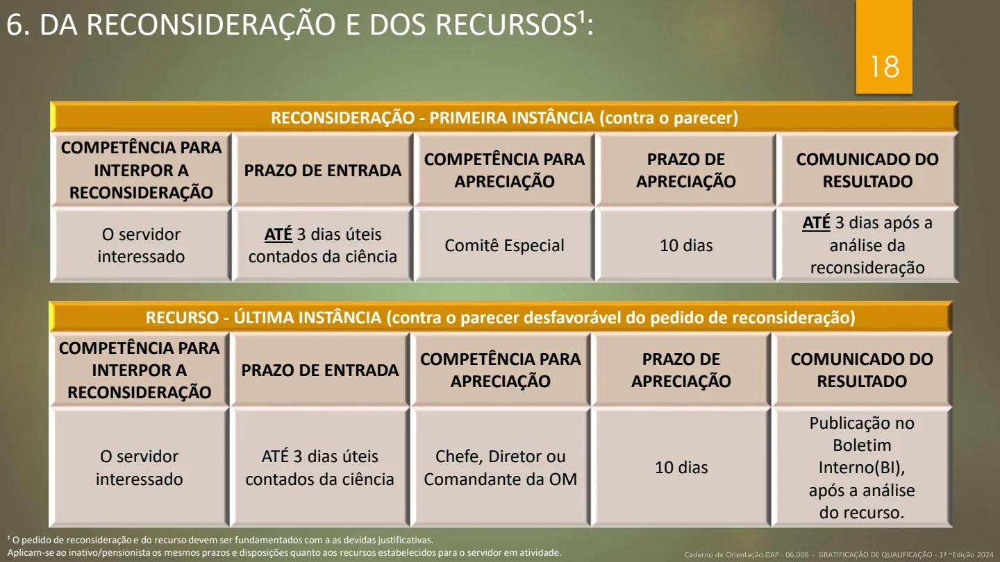
Documentos necessários
PDF · p. 19Esta página contém conteúdo gráfico. Consulte a reprodução original abaixo.
Ver página original — tabelas, imagens e diagramas
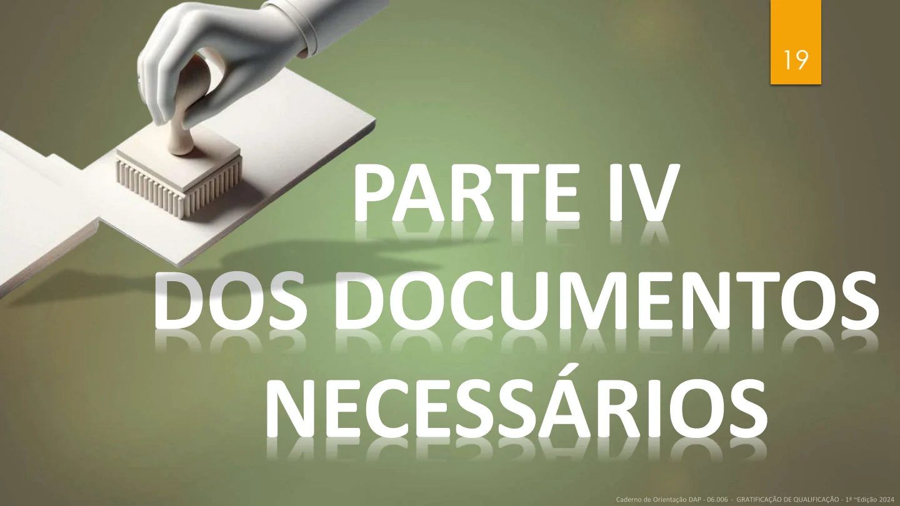
Documentos necessários
PDF · p. 20DOCUMENTO RESPONSÁVEL PELA
EMISSÃO/ENVIO/ELABORAÇÃO OBSERVAÇÃO
Requerimento Interessado
Para o servidor ativo: Conforme descrição da
próxima página
ou
No caso de aposentado: Anexo A
Informação OM Conforme descrição da próximapágina
Ficha de Avaliação de Desempenho
Profissional Banca Examinadora Anexo B
Parecer sobre cursos Comitê Especial Anexo C
Parecer sobre prova prática e/ou
escrita Comitê Especial
No caso de concessão do Nível da GQ, por
reconhecimento da qualificação profissional
pela prova prática e/ou escrita.
Anexo D
Decisão sobre a concessão da GQ do Comandante, Chefe ou Diretor da
OM Publicada em BI
Ver página original — tabelas, imagens e diagramas
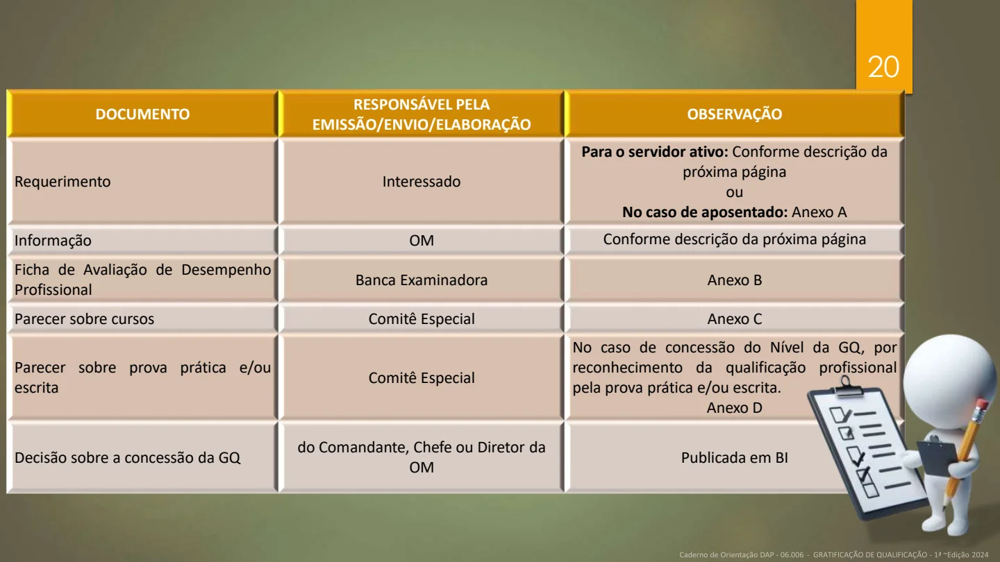
Documentos necessários
PDF · p. 21REDIGINDO OS DOCUMENTOS NO SPED (Requerimento e Informação):
1
2
4
5
Requerimento Informação
3
6
Ver página original — tabelas, imagens e diagramas
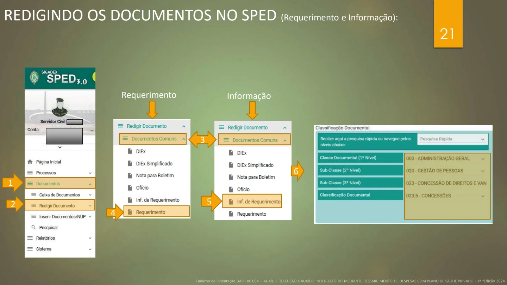
Esta página contém conteúdo gráfico. Consulte a reprodução original abaixo.
Ver página original — tabelas, imagens e diagramas
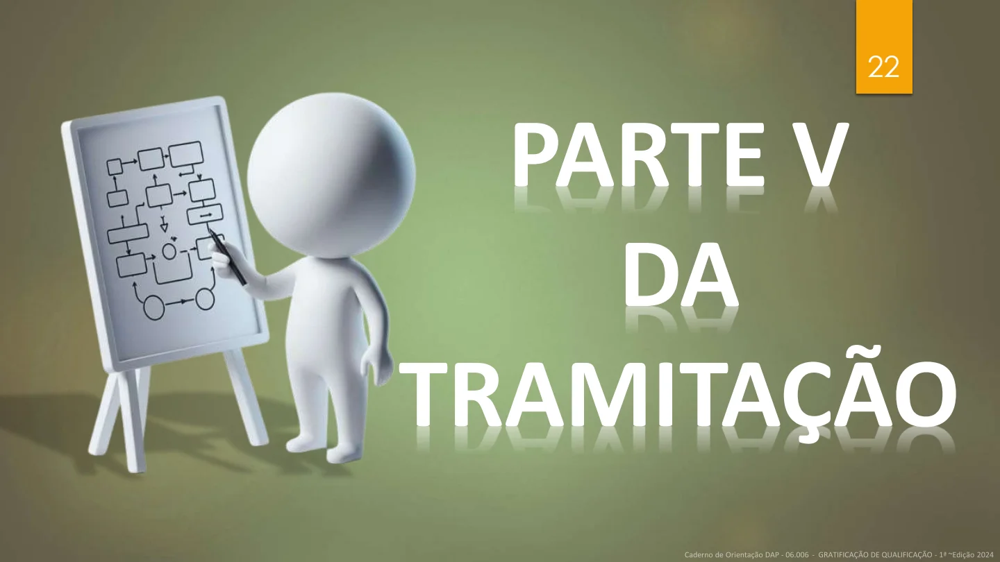
1. DOS PROCEDIMENTOS GERAIS:
Órgão/responsável Providências Observações
Servidor
interessado
Requer a concessão da GQ
Apresenta documentação
comprobatória
dos cursos realizados ou
solicita aplicação
da prova prática e/ou
escrita
Banca examinadora
Aplica a prova prática e/ou
escrita e preenche a
ficha de avaliação
Prazo: 5 (cinco) dias úteis
Cmt, Ch ou Dir OM
Convoca o CE que havia
designado pelo período
de 1 ano, conforme
publicação no
Boletim Interno
No prazo de 15 dias a
contar do
recebimento do
requerimento do servidor
Ver página original — tabelas, imagens e diagramas
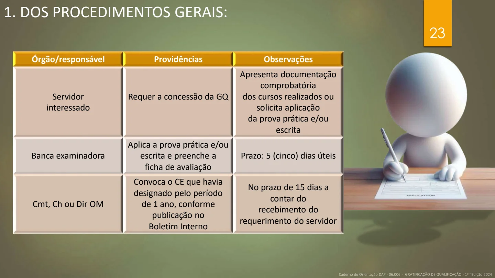
1. DOS PROCEDIMENTOS GERAIS (cont.):
Órgão/responsável Providências Observações
CE
Emite parecer
recomendando ou não a
concessão
da GQ e dá ciência ao
servidor
No prazo de 30 dias
contados da convocação. É
admitida a prorrogação
por mais 30 dias,
devidamente justificada
OM
Publica a decisão final
(após a análise das
reconsiderações e
recursos) em BI e implanta
a GQ
Dentro do prazo de 10
(dez) dias, contados
do recebimento do
Parecer do Comitê
Especial pelo Cmt, Ch ou
Dir OM
Ver página original — tabelas, imagens e diagramas
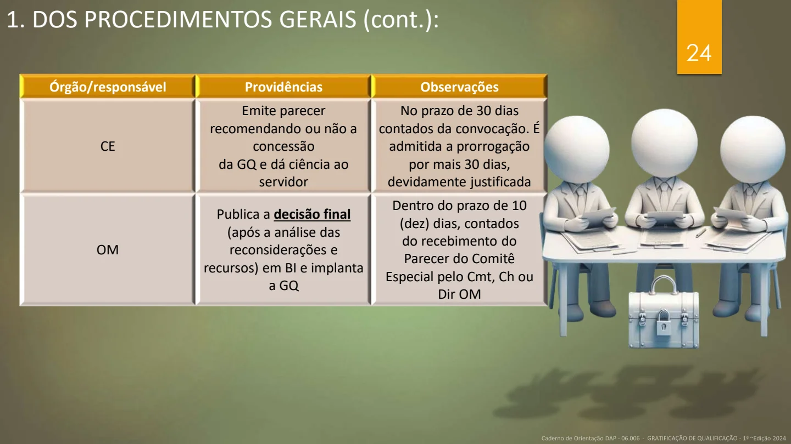
Tramitação de reconsideração e recursos
PDF · p. 252. DA RECONSIDERAÇÃO E DOS RECURSOS:
DA RECONSIDERAÇÃO
Órgão/responsável Providências Observações
Servidor
interessado
No caso de discordância com o
parecer,
Poderá apresentar pedido de
reconsideração ao
Presidente do CE, em primeira
instância
Apresentar justificativas
Prazo: 3 dias úteis, a contar da
ciência
CE Apreciar o pedido de
reconsideração
No prazo de 10 (dez) dias. O
servidor interessado deve ser
comunicado resultado em até
3(três) dias.
Se o servidor acata a decisão do CE sobre o pedido de reconsideração, o processosegue a tramitação da
publicação de decisão final, pela OM.
Ver página original — tabelas, imagens e diagramas
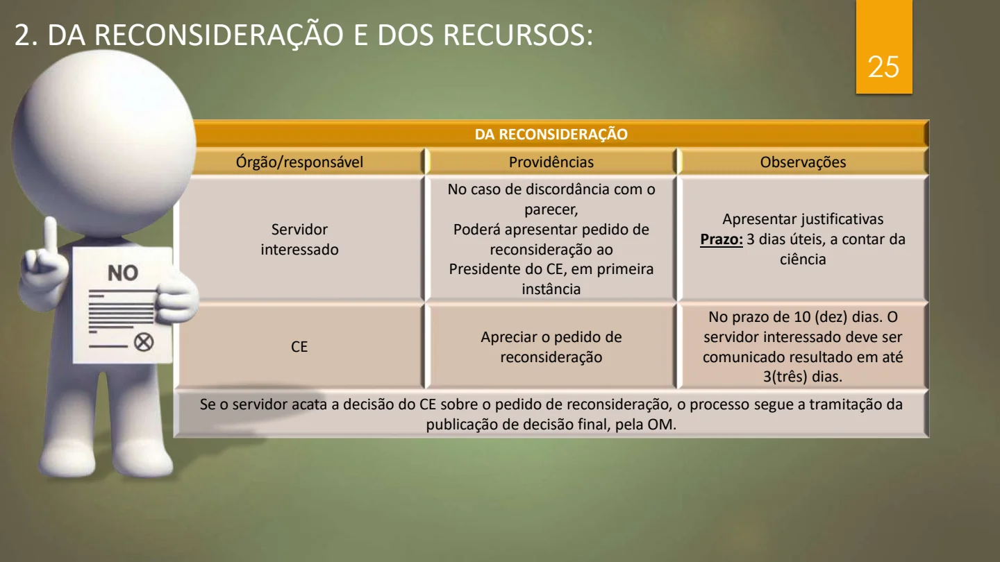
Tramitação de reconsideração e recursos
PDF · p. 262. DA RECONSIDERAÇÃO E DOS RECURSOS (continuação):
DO RECURSO
Órgão/responsável Providências Observações
Servidor
interessado
No caso de discordância
quanto ao Parecer
desfavorável do pedido de
reconsideração, o servidor
poderá
apresentar recurso, em
última instância ao Ch,
Cmt ou Dir OM
Prazo: 3 (três) dias úteis, a
contar da ciência do
Parecer
Cmt, Ch ou Dir OM
Aprecia o recurso, defere
ou indefere a GQ e
determina a publicação no
Boletim Interno
No prazo de 10 (dez) dias,
a contar do recebimento
do Parecer do Comitê
Especial
OM Publica em Bl e implanta a
GQ
Dentro do prazo de 10
(dez) dias, contados
do recebimento do
Parecer do Comitê
Especial pelo Cmt, Ch ou
Dir OM
Ver página original — tabelas, imagens e diagramas
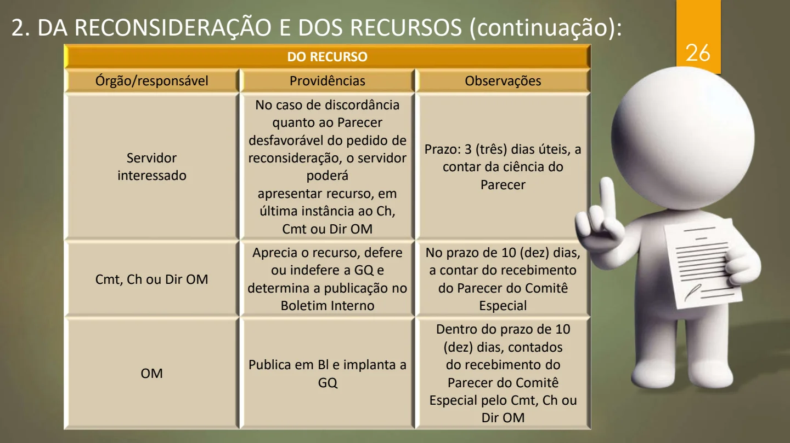
Tramitação de reconsideração e recursos
PDF · p. 27Não será considerado pedido de reconsideração ou recurso que for
interposto fora do prazo.
Quanto ao pedido de reconsideração e recurso do servidor aposentado e do
pensionista, contra o parecer do Diretor de Assistência ao Pessoal (DAP):
a) EM PRIMEIRA INSTÂNCIA: deve apresentar pedido de reconsideração, ao próprio
Diretor da DAP;
b) EM ÚLTIMA INSTÂNCIA: deve apresentar o recurso ao Chefe do Departamento
Geral do Pessoal.
2. DA RECONSIDERAÇÃO E DOS RECURSOS (continuação):
Ver página original — tabelas, imagens e diagramas
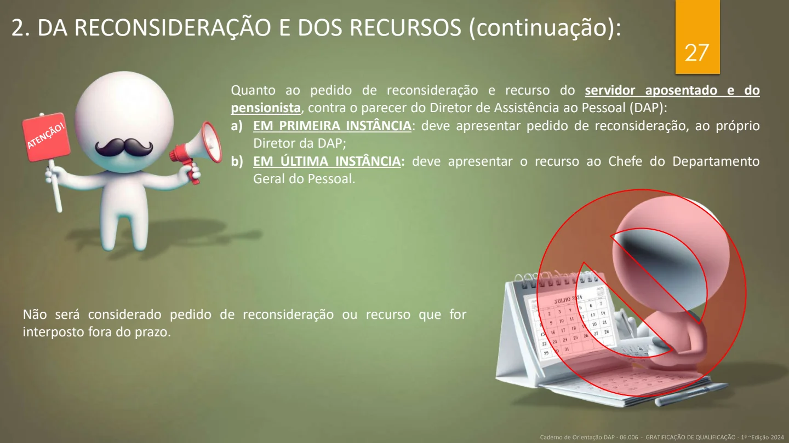
Fontes e elaboração
PDF · p. 2828ELABORAÇÃO:
ASSESSORIA TÉCNICA DA SPC/DAP
DEZEMBRO DE 2024
Para conhecer melhor o assunto, leia as
legislações indicadas no início deste caderno, disponíveis no link:
https://legis.sigepe.gov.br/legis/pesquisa-avancada
https://www4.planalto.gov.br/legislacao
Ver página original — tabelas, imagens e diagramas
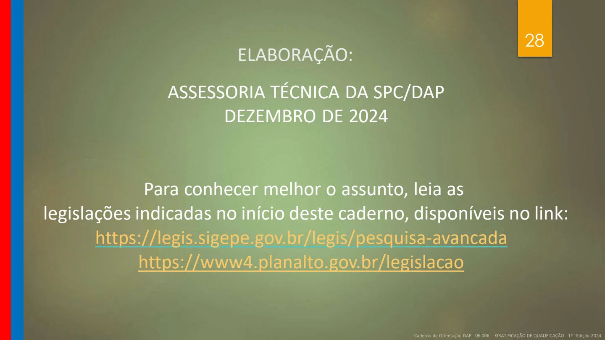